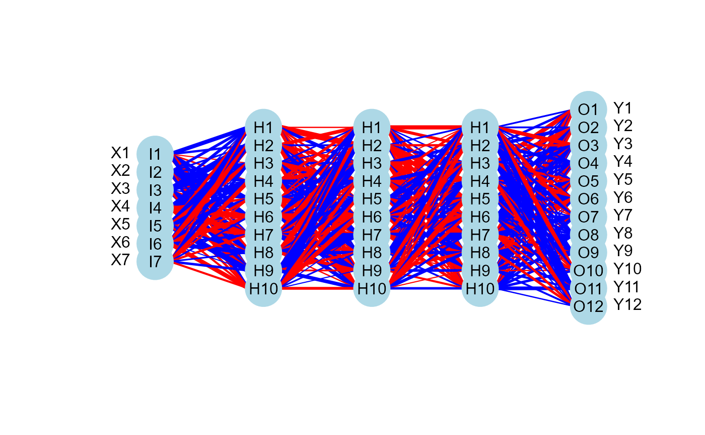

The function uses the plotnet
function of the NeuralNetTools R package to draw a neural network
plot and visualize the hidden layer structure.
Value
The function invisibly returns the graphical objects representing the neural network architecture designed by NeuralNetTools.
Details
The induced subgraph of the input graph mapped on data variables. Based on the estimated connection weights, if the connection weight W > 0, the connection is activated and it is highlighted in red; if W < 0, the connection is inhibited and it is highlighted in blue.
References
Beck, M.W. 2018. NeuralNetTools: Visualization and Analysis Tools for Neural Networks. Journal of Statistical Software. 85(11):1-20.
Author
Mario Grassi mario.grassi@unipv.it
Examples
# \donttest{
if (torch::torch_is_installed()){
# load ALS data
ig<- alsData$graph
data<- alsData$exprs
data<- transformData(data)$data
#ncores<- parallel::detectCores(logical = FALSE)
dnn0 <- SEMdnn(ig, data, train=1:nrow(data), algo = "layerwise",
hidden = c(10, 10, 10), link = "selu", bias =TRUE,
epochs = 32, patience = 10, verbose = TRUE)
#Visualize the neural networks per each layer of dnn0
nplot(dnn0, hidden = c(10, 10, 10), bias = FALSE)
}
#> Conducting the nonparanormal transformation via shrunkun ECDF...done.
#> Running SEM model via DNN...
#>
#> layer 1 : z10452 z84134 z836 z4747 z4741 z4744 z79139 z5530 z5532 z5533 ...
#> train val base
#> 0.445215 Inf 0.993750
#>
#> layer 2 : z842 z1432 z5600 z5603 z6300
#> train val base
#> 0.5153647 Inf 0.9937500
#>
#> layer 3 : z54205 z5606 z5608
#> train val base
#> 0.5990095 Inf 0.9937500
#>
#> layer 4 : z596 z4217
#> train val base
#> 0.9540080 Inf 0.9937501
#>
#> layer 5 : z1616
#> train val base
#> 0.8792974 Inf 0.9937500
#> done.
#>
#> DNN solver ended normally after 160 iterations
#>
#> logL:-50.309658 srmr:0.207363



 # }
# }